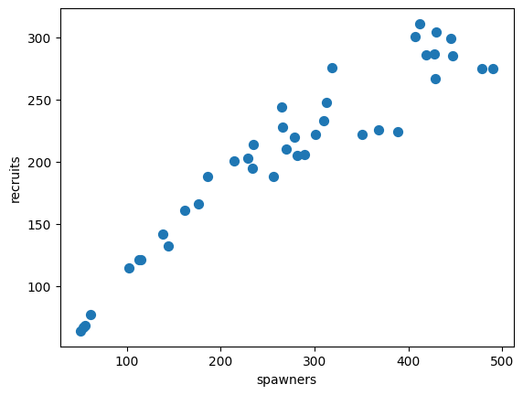

Gaussian Processes
Contents
Gaussian Processes#
%pip install pymc pytensor
Requirement already satisfied: pymc in /usr/local/lib/python3.10/dist-packages (5.10.4)
Requirement already satisfied: pytensor in /usr/local/lib/python3.10/dist-packages (2.18.6)
Requirement already satisfied: arviz>=0.13.0 in /usr/local/lib/python3.10/dist-packages (from pymc) (0.15.1)
Requirement already satisfied: cachetools>=4.2.1 in /usr/local/lib/python3.10/dist-packages (from pymc) (5.3.3)
Requirement already satisfied: cloudpickle in /usr/local/lib/python3.10/dist-packages (from pymc) (2.2.1)
Requirement already satisfied: fastprogress>=0.2.0 in /usr/local/lib/python3.10/dist-packages (from pymc) (1.0.3)
Requirement already satisfied: numpy>=1.15.0 in /usr/local/lib/python3.10/dist-packages (from pymc) (1.25.2)
Requirement already satisfied: pandas>=0.24.0 in /usr/local/lib/python3.10/dist-packages (from pymc) (1.5.3)
Requirement already satisfied: scipy>=1.4.1 in /usr/local/lib/python3.10/dist-packages (from pymc) (1.11.4)
Requirement already satisfied: typing-extensions>=3.7.4 in /usr/local/lib/python3.10/dist-packages (from pymc) (4.10.0)
Requirement already satisfied: setuptools>=48.0.0 in /usr/local/lib/python3.10/dist-packages (from pytensor) (67.7.2)
Requirement already satisfied: filelock in /usr/local/lib/python3.10/dist-packages (from pytensor) (3.13.1)
Requirement already satisfied: etuples in /usr/local/lib/python3.10/dist-packages (from pytensor) (0.3.9)
Requirement already satisfied: logical-unification in /usr/local/lib/python3.10/dist-packages (from pytensor) (0.4.6)
Requirement already satisfied: miniKanren in /usr/local/lib/python3.10/dist-packages (from pytensor) (1.0.3)
Requirement already satisfied: cons in /usr/local/lib/python3.10/dist-packages (from pytensor) (0.4.6)
Requirement already satisfied: matplotlib>=3.2 in /usr/local/lib/python3.10/dist-packages (from arviz>=0.13.0->pymc) (3.7.1)
Requirement already satisfied: packaging in /usr/local/lib/python3.10/dist-packages (from arviz>=0.13.0->pymc) (24.0)
Requirement already satisfied: xarray>=0.21.0 in /usr/local/lib/python3.10/dist-packages (from arviz>=0.13.0->pymc) (2023.7.0)
Requirement already satisfied: h5netcdf>=1.0.2 in /usr/local/lib/python3.10/dist-packages (from arviz>=0.13.0->pymc) (1.3.0)
Requirement already satisfied: xarray-einstats>=0.3 in /usr/local/lib/python3.10/dist-packages (from arviz>=0.13.0->pymc) (0.7.0)
Requirement already satisfied: python-dateutil>=2.8.1 in /usr/local/lib/python3.10/dist-packages (from pandas>=0.24.0->pymc) (2.8.2)
Requirement already satisfied: pytz>=2020.1 in /usr/local/lib/python3.10/dist-packages (from pandas>=0.24.0->pymc) (2023.4)
Requirement already satisfied: toolz in /usr/local/lib/python3.10/dist-packages (from logical-unification->pytensor) (0.12.1)
Requirement already satisfied: multipledispatch in /usr/local/lib/python3.10/dist-packages (from logical-unification->pytensor) (1.0.0)
Requirement already satisfied: h5py in /usr/local/lib/python3.10/dist-packages (from h5netcdf>=1.0.2->arviz>=0.13.0->pymc) (3.9.0)
Requirement already satisfied: contourpy>=1.0.1 in /usr/local/lib/python3.10/dist-packages (from matplotlib>=3.2->arviz>=0.13.0->pymc) (1.2.0)
Requirement already satisfied: cycler>=0.10 in /usr/local/lib/python3.10/dist-packages (from matplotlib>=3.2->arviz>=0.13.0->pymc) (0.12.1)
Requirement already satisfied: fonttools>=4.22.0 in /usr/local/lib/python3.10/dist-packages (from matplotlib>=3.2->arviz>=0.13.0->pymc) (4.50.0)
Requirement already satisfied: kiwisolver>=1.0.1 in /usr/local/lib/python3.10/dist-packages (from matplotlib>=3.2->arviz>=0.13.0->pymc) (1.4.5)
Requirement already satisfied: pillow>=6.2.0 in /usr/local/lib/python3.10/dist-packages (from matplotlib>=3.2->arviz>=0.13.0->pymc) (9.4.0)
Requirement already satisfied: pyparsing>=2.3.1 in /usr/local/lib/python3.10/dist-packages (from matplotlib>=3.2->arviz>=0.13.0->pymc) (3.1.2)
Requirement already satisfied: six>=1.5 in /usr/local/lib/python3.10/dist-packages (from python-dateutil>=2.8.1->pandas>=0.24.0->pymc) (1.16.0)
import numpy as np
import matplotlib.pyplot as plt
from scipy import stats
import pymc as pm
Covariance Functions and Kernel#
def exp_quad_kernel(x,knots,l=1):
return np.array([np.exp(-(x-k)**2/(2*l**2)) for k in knots])
data = np.array([-1,0,1,2])
#data = np.array([-1,0])
cov = exp_quad_kernel(data,data,1)
print(cov)
[[1. 0.60653066 0.13533528 0.011109 ]
[0.60653066 1. 0.60653066 0.13533528]
[0.13533528 0.60653066 1. 0.60653066]
[0.011109 0.13533528 0.60653066 1. ]]
_, ax=plt.subplots(1,2,figsize=(12,5))
ax[0].plot(data, np.zeros_like(data),'ko')
ax[0].set_yticks([])
for idx,i in enumerate(data):
ax[0].text(i,0+0.005, idx)
ax[0].set_xticks(data)
ax[0].set_xticklabels(np.round(data,2))
ax[1].grid(False)
im = ax[1].imshow(cov)
colors=['w','k']
for i in range(len(cov)):
for j in range(len(cov)):
ax[1].text(i,j, round(cov[i,j],2), color=colors[int(im.norm(cov[i,j])>0.5)], ha = 'center', va='center', fontdict={'size':16})
ax[1].set_xticks(range(len(data)))
ax[1].set_yticks(range(len(data)))
ax[1].xaxis.tick_top()
np.random.seed(24)
test_points = np.linspace(0,10,200)
fig, ax = plt.subplots(2,2,figsize=(12,6),sharex=True,sharey=True,constrained_layout=True)
ax = np.ravel(ax)
for idx, l in enumerate((0.2,1,2,10)):
cov = exp_quad_kernel(test_points, test_points, l)
ax[idx].plot(test_points, stats.multivariate_normal.rvs(cov=cov,size=3).T)
ax[idx].set_title(f'l={l}')
fig.text(0.51,-0.03,'x', fontsize=16)
fig.text(-0.03,0.5,'f(x)', fontsize=16, rotation=90)
Text(-0.03, 0.5, 'f(x)')
Gaussian Processes: Implementation#
np.random.seed(42)
x = np.random.uniform(0,10,size=15)
scale = 0.50
y = np.random.normal(scale*x*np.sin(x), 0.1)
plt.plot(x,y,'o')
true_x = np.linspace(0,10,200)
true_y = scale*true_x*np.sin(true_x)
plt.plot(true_x,true_y, 'k--')
[<matplotlib.lines.Line2D at 0x7e097098ec50>]
X = x[:,None]
with pm.Model() as model_reg:
#hyperprior for lengthscale kernel parameter
l = pm.Gamma('l',2,0.5)
#instantiate a covariance function
cov = pm.gp.cov.ExpQuad(1,ls=l)
#mean = pm.gp.mean.Constant(c=0)
#instantiate a GP prior
gp = pm.gp.Marginal(cov_func=cov)#mean_func=mean,
#prior
eps = pm.HalfNormal('eps',25)
#likelihood
y_pred = gp.marginal_likelihood('y_pred',X=X, y=y, noise=eps)
trace_reg = pm.sample(2000, return_inferencedata=True, target_accept=0.95)
/usr/local/lib/python3.10/dist-packages/pymc/gp/gp.py:56: FutureWarning: The 'noise' parameter has been been changed to 'sigma' in order to standardize the GP API and will be deprecated in future releases.
warnings.warn(_noise_deprecation_warning, FutureWarning)
100.00% [3000/3000 00:19<00:00 Sampling chain 0, 0 divergences]
100.00% [3000/3000 00:23<00:00 Sampling chain 1, 0 divergences]
import arviz as az
az.plot_trace(trace_reg)
/usr/local/lib/python3.10/dist-packages/arviz/utils.py:184: NumbaDeprecationWarning: The 'nopython' keyword argument was not supplied to the 'numba.jit' decorator. The implicit default value for this argument is currently False, but it will be changed to True in Numba 0.59.0. See https://numba.readthedocs.io/en/stable/reference/deprecation.html#deprecation-of-object-mode-fall-back-behaviour-when-using-jit for details.
numba_fn = numba.jit(**self.kwargs)(self.function)
array([[<Axes: title={'center': 'l'}>, <Axes: title={'center': 'l'}>],
[<Axes: title={'center': 'eps'}>, <Axes: title={'center': 'eps'}>]],
dtype=object)
X_new = np.linspace(np.floor(x.min()), np.ceil(x.max()), 100)[:,None]
with model_reg:
#del marginal_gp_model.named_vars['f_pred']
#marginal_gp_model.vars.remove(f_pred)
f_pred = gp.conditional('f_pred', X_new)
with model_reg:
pred_samples = pm.sample_posterior_predictive(trace_reg, var_names=['f_pred'])
100.00% [4000/4000 00:53<00:00]
pred_samples
arviz.InferenceData
-
<xarray.Dataset> Dimensions: (chain: 2, draw: 2000, f_pred_dim_2: 100) Coordinates: * chain (chain) int64 0 1 * draw (draw) int64 0 1 2 3 4 5 6 ... 1994 1995 1996 1997 1998 1999 * f_pred_dim_2 (f_pred_dim_2) int64 0 1 2 3 4 5 6 7 ... 93 94 95 96 97 98 99 Data variables: f_pred (chain, draw, f_pred_dim_2) float64 0.0928 0.04929 ... -2.191 Attributes: created_at: 2024-03-26T01:56:59.862834 arviz_version: 0.15.1 inference_library: pymc inference_library_version: 5.10.4 -
<xarray.Dataset> Dimensions: (y_pred_dim_0: 15) Coordinates: * y_pred_dim_0 (y_pred_dim_0) int64 0 1 2 3 4 5 6 7 8 9 10 11 12 13 14 Data variables: y_pred (y_pred_dim_0) float64 -1.12 -0.4835 2.889 ... 0.9431 0.8937 Attributes: created_at: 2024-03-26T01:56:59.864786 arviz_version: 0.15.1 inference_library: pymc inference_library_version: 5.10.4
print(np.shape(pred_samples.posterior_predictive['f_pred'].mean(axis=0).T))
print(np.shape(X_new))
(100, 2000)
(100, 1)
_, ax = plt.subplots(figsize=(12,5))
ax.plot(X_new, pred_samples.posterior_predictive['f_pred'].mean(axis=0).T, 'C1-', alpha=0.3)
ax.plot(X, y, 'ko')
ax.set_xlabel('X')
Text(0.5, 0, 'X')
_, ax = plt.subplots(figsize=(12,5))
pm.gp.util.plot_gp_dist(ax, pred_samples.posterior_predictive['f_pred'].mean(axis=0), X_new, palette='viridis',plot_samples=False)
ax.plot(X,y,'ko')
ax.set_xlabel('x')
ax.set_ylabel('f(x)',labelpad=25)
Text(0, 0.5, 'f(x)')
_, ax = plt.subplots(figsize=(12,5))
point = {'l':trace_reg.posterior['l'].mean(), 'eps':trace_reg.posterior['eps'].mean()}
mu, var = gp.predict(X_new, point=point, diag=True, model = model_reg)
sd = var**0.5
ax.plot(X_new,mu,'C1')
ax.fill_between(X_new.flatten(),mu-sd,mu+sd, color="C1",alpha=0.3)
ax.plot(X_new,mu,'C1')
ax.fill_between(X_new.flatten(),mu-2*sd,mu+2*sd, color="C1",alpha=0.3)
ax.plot(X,y,'ko')
ax.set_xlabel('X')
Text(0.5, 0, 'X')
Real-world example: Spawning Salmon#
credits: https://github.com/fonnesbeck/gp_tutorial_pydata
The plot below shows the relationship between the number of spawning salmon in a particular stream and the number of fry that are recruited into the population in the spring.
Biological knowledge suggests this relationship is not linear and we would like to model it.

import requests
import pandas as pd
import io
target_url = 'https://raw.githubusercontent.com/cfteach/brds/main/datasets/salmon.txt'
download = requests.get(target_url).content
salmon_data = pd.read_table(io.StringIO(download.decode('utf-8')), sep='\s+', index_col=0)
salmon_data.plot.scatter(x='spawners', y='recruits', s=50);

#we have prior knowledge about fish population growth, and we can include a linear mean function as a prior
with pm.Model() as salmon_model:
# Lengthscale
= pm.HalfCauchy('', 1)
= pm.HalfCauchy('', 1)
#=1
M = pm.gp.mean.Linear(coeffs=(salmon_data.recruits/salmon_data.spawners).mean())
K = (**2) * pm.gp.cov.ExpQuad(1, )
with salmon_model:
= pm.HalfCauchy('', 1)
recruit_gp = pm.gp.Marginal(mean_func=M, cov_func=K)
recruit_gp.marginal_likelihood('recruits', X=salmon_data.spawners.values.reshape(-1,1),
y=salmon_data.recruits.values, noise=)
/usr/local/lib/python3.10/dist-packages/pymc/gp/gp.py:56: FutureWarning: The 'noise' parameter has been been changed to 'sigma' in order to standardize the GP API and will be deprecated in future releases.
warnings.warn(_noise_deprecation_warning, FutureWarning)
with salmon_model:
salmon_trace = pm.sample(1000, return_inferencedata=True)
100.00% [2000/2000 00:22<00:00 Sampling chain 0, 0 divergences]
100.00% [2000/2000 00:22<00:00 Sampling chain 1, 0 divergences]
az.plot_trace(salmon_trace, var_names=['','','']) #''
array([[<Axes: title={'center': ''}>, <Axes: title={'center': ''}>],
[<Axes: title={'center': ''}>, <Axes: title={'center': ''}>],
[<Axes: title={'center': ''}>, <Axes: title={'center': ''}>]],
dtype=object)
X_pred = np.linspace(0, 500, 100).reshape(-1, 1)
with salmon_model:
salmon_pred3 = recruit_gp.conditional('salmon_pred3', X_pred)
with salmon_model:
salmon_samples = pm.sample_posterior_predictive(salmon_trace, var_names=['salmon_pred3'])
100.00% [2000/2000 00:28<00:00]
salmon_data['spawners'].values
array([ 56, 62, 445, 279, 138, 428, 319, 102, 51, 289, 351, 282, 310,
266, 256, 144, 447, 186, 389, 113, 412, 176, 313, 162, 368, 54,
214, 429, 115, 407, 265, 301, 234, 229, 270, 478, 419, 490, 430,
235])
_, ax = plt.subplots(figsize=(12,5))
ax.plot(X_pred, salmon_samples.posterior_predictive['salmon_pred3'].mean(axis=0).T, 'C1-', alpha=0.3)
ax.plot(salmon_data['spawners'].values,salmon_data['recruits'].values, 'ko')
#ax.set_xlabel('X')
ax.set_ylim(-100,400)
(-100.0, 400.0)
What happens if the population gets very large, e.g., at 600 or 800 spawners?
X_pred = np.linspace(0, 800, 100).reshape(-1, 1)
with salmon_model:
salmon_pred4 = recruit_gp.conditional('salmon_pred4', X_pred)
with salmon_model:
salmon_samples = pm.sample_posterior_predictive(salmon_trace, var_names=['salmon_pred4'])
100.00% [2000/2000 00:24<00:00]
_, ax = plt.subplots(figsize=(12,5))
ax.plot(X_pred, salmon_samples.posterior_predictive['salmon_pred4'].mean(axis=0).T, 'C1-', alpha=0.3)
ax.plot(salmon_data['spawners'].values,salmon_data['recruits'].values, 'ko')
[<matplotlib.lines.Line2D at 0x7e0958596380>]
_, ax = plt.subplots(figsize=(12,5))
mu = salmon_samples.posterior_predictive['salmon_pred4'].mean(axis=0).T.mean(axis=1)
sd = salmon_samples.posterior_predictive['salmon_pred4'].std(axis=0).T.mean(axis=1)
ax.plot(X_pred,mu,'C1')
ax.fill_between(X_pred.flatten(),mu-sd,mu+sd, color="C1",alpha=0.3)
ax.plot(X_pred,mu,'C1')
ax.fill_between(X_pred.flatten(),mu-3*sd,mu+3*sd, color="C1",alpha=0.3)
ax.plot(salmon_data['spawners'].values,salmon_data['recruits'].values, 'ko')
[<matplotlib.lines.Line2D at 0x7e0957e302b0>]